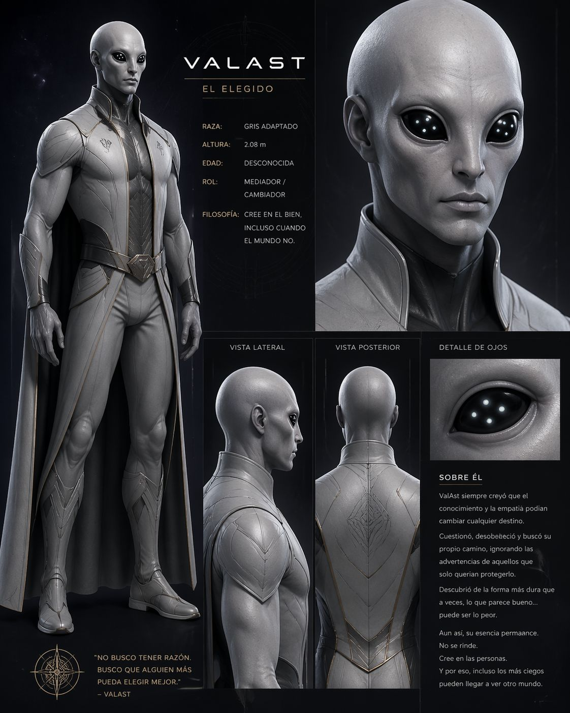

Raza: Gris Adaptado
Altura: 2.08 m
Edad: Desconocida
Rol: Mediador / Cambiador
Cree en el bien incluso cuando el mundo no. Cuestionó todo lo que conocía y terminó atrapado entre dos verdades manipuladas.